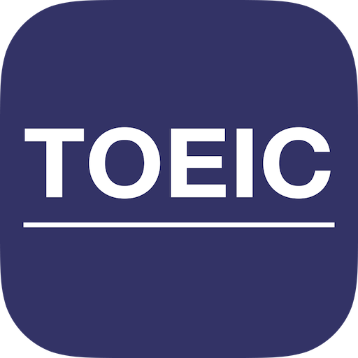
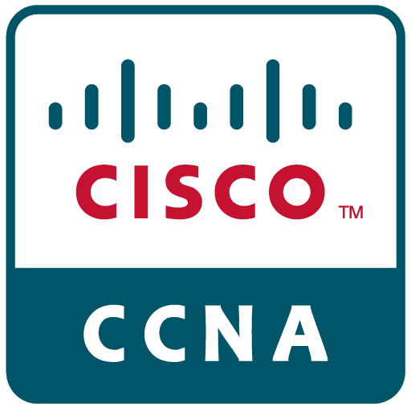

Exploitation & incidents
Diagnostic et résolution d'incidents réseau, y compris en situation de crise, sur WiFi, LAN, switchs et firewalls. Coordination avec les opérateurs et les techniciens sur site.
Disponible · Poste en infrastructure / support IT
> Technicien Infrastructure & Réseaux
Diplômé d'un BUT Réseaux & Télécommunications, parcours Cybersécurité (Bac+3), avec 2 ans d'exploitation réseau chez Auchan Retail. Je diagnostique, je résous et je documente : incidents réseau, tickets ITSM, supervision et sécurité des infrastructures.
$ whoami technicien-infra-reseaux $ cat stack.txt Cisco · Meraki · Palo Alto · pfSense EasyVista · Centreon · Zabbix Linux · Windows Server · Proxmox · Docker $ systemctl status roman ● active (running) · prêt à vous rejoindre
01 · Profil
Le terrain de l'exploitation, la rigueur du ticketing et le réflexe sécurité.
Diagnostic et résolution d'incidents réseau, y compris en situation de crise, sur WiFi, LAN, switchs et firewalls. Coordination avec les opérateurs et les techniciens sur site.
Suivi des incidents et demandes de service dans EasyVista, supervision avec Centreon, SolarWinds et Meraki, et création automatique de tickets depuis la supervision.
Administration Linux et Windows Server / Active Directory, virtualisation Proxmox et Docker, filtrage pfSense, DMZ, VPN et bonnes pratiques ANSSI.
02 · Expérience
Auchan Retail · Équipe Exploitation Réseau · Alternance
03 · Compétences
Ce que j'utilise en production et ce que j'ai mis en œuvre pendant le BUT.
Clique sur une carte pour voir les réalisations et les captures.
04 · Projets
Des projets menés de A à Z, du schéma à la soutenance.
05 · Formation
IUT de Béthune · Parcours Cybersécurité · En alternance
Administrer les réseaux et l'Internet, administrer et surveiller un système d'information sécurisé, créer des outils pour les R&T. Au programme : switching, réseaux sans fil, TCP/IP, firewalls, IDS/IPS, VPN, SIEM, réponse à incident, cryptographie, virtualisation, scripts.
Lycée de l'Europe · Mathématiques, NSI, section européenne anglais

Anglais professionnel, niveau B2
Sécurité numérique
Compétences numériques

En préparation
06 · En dehors du travail
07 · Contact
Je suis disponible pour un poste de technicien infrastructure, réseaux ou support IT dans les Hauts-de-France. Parlons-en.